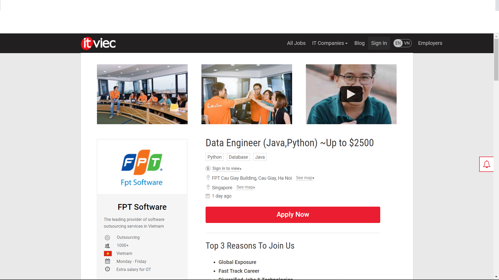

I am come from Vietnam which country has the size of the S and I can speak Vietnamese as well as English.
If I have spare time, I would like to playing video games with my friends or cooking.
I also want to raise a cat with my lover because we both love the cuteness of it.
The reason I choose to learning Information Technology at RMIT is because I have a strong favor about computer when I was very young.
I found it is very interesting to know
how applications can run on the computer
as well as learning to run a web in order to help my parents company. Moreover, understanding how computers work is very neccessary
in working. Thesedays,
all jobs required an amount of knowledge about using computers. You just need to know a basic using knowledge about computing.
However, I haven't have
any specific knowledge about web programming or coding so I hope RMIT will help me to
improve my skills so that I can follow my dream and can be success in my future.
After graduate, I want to work in company which related to web programming or making game because it is my hobby since
I was very young. According to my major, I want a job
which mainly related to my major such as web programming or data engineer.
Therefore, I have searching in these two website https://itviec.com
and https://www.vietnamworks.com
to search for information about my dream jobs. It
recommend me a position about data engineer in FPT and I very want to occupy this position. And here is the link to follow to the job
I want
https://itviec.com/it-jobs/data-engineer-java-python-up-to-2500-fpt-software-3442?lab_feature=employer_job and also a picture of it

This job has a lot of convenience for me such as high-paid salary as well as it related
to my major so I can work well in this position. Therefore, this will be the infasstructure
for me to get promote
to a higher position. Moreover, it is not compulsory in working-time so I can choose time to work freely. However, this
job required some specific skills such as having BS degree in
Computer Science,
having two years experience in working with Python and Java or Linux OS and English is a must to apply for this job.
If I want to apply for this job, I have to work hard to get this offer.
Because I haven't have any skill about programming so I need to learn
all the basic about Pyhthon and Java. In addition, it will help me to build strong infasstructure about programming
The project I am going to do called Puzzle & Programming. It builds base on the purpose that helping children
to have a general look about programming as well as teaching them basic knowledge of science which
include Math, Physics, Chemistry and Literature.
This app will mainly aim at children who age range from 6 to 16.
Because of children’s curiousness, they will found it interesting while solving problems besides playing.
To become a data engineer, we need skills which can meet the requirements of the company and also working hard
to keep up with the world. We may hear the news that Apple release new smartphone today but
we also hear on
tomorrow that they are thinking about the next generation of that phone. This require a large number of engineers
who work in computing science and data. In addition, children is a future of any
countries and many of them confused that
whether they choose their majot right or wrong.
This project is not only a game but also a guide to help these children recognize what they really want to do in future.
First, the game called Puzzle & Programming so obviously it will have two part. Puzzle will have part such as multiple choice or odd one to revive what they have learnt at school. In the multiple choice, instead of using mouse to choose A, B, C or D, users have to type the answer in the time given. Even though it sounds very hard but in the contrary, it will train them fast-typing as well as fast-thinking. It is like a competition and children very like competition. The questions include knowledge of Math, Physics, Chemistry or Literature range from grade 1 to 12. In addition, these parts will have the summary of lessons for them to read again in case they forgot it. Moreover, parents can also use this program as a text book to teach their children instead of let their kid go to school. Programming part will mainly aim at basic things about coding such as programming language. They will know how to make a simple program running by some simple codes such as display “hello world” or create simple formula to calculate first 20 even numbers in Pascal. Second, these modules divide base on age in order to make it proper to the users and the level of each modules will get harder and harder so that they can get better for every game they play. Third, this is the game for children so the display of the program must be easy and friendly to understand in order to let children use it easily. Aiming mainly at children so concept of this project must be funny and attractive to not only kid but also their parents as well. Some cartoon characters are very famous like Doraemon, Mario are being used widely for the concept due to the friendliness.
Puzzle & Programming is created base on Cocos2d and the programming language is Python which is the most common one todays. Due to the common of Python, we can easily access and create the feature of the game such as display, concept and content. The code must be exact in everycode to make sure there is no bug. In addtion, debug skill is also require for developers in order to check and repair fastest. Therefore, always stay focus on coding.
If the project is success, the games will get optimize more and more to make it better. Some developers just make the game and leave it without changing. Keeping the game always friendly and attractive to users is very important.Moreover, it will help children leanr about programming in easiest way which may be become an infasstructure to their fututre job.